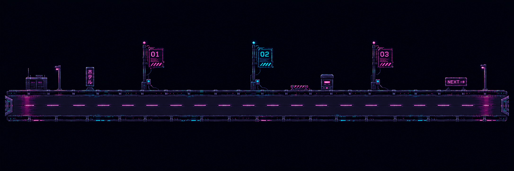

Route // 2022—NowSelect a beacon.


-
Tesla
Software Engineering Intern
Reno, NV
Got a Cybertruck Hotwheel. Will trade 4 job.
-
Apple
Software Engineering Intern
+ Cupertino, CA
Xcode engineering, pre-Claude.
-

Meta
Software Engineer · Instagram Stories
—PresentMenlo Park, CA
Mobile development beast, raised by Claude.
-
Email.
Suggestions?